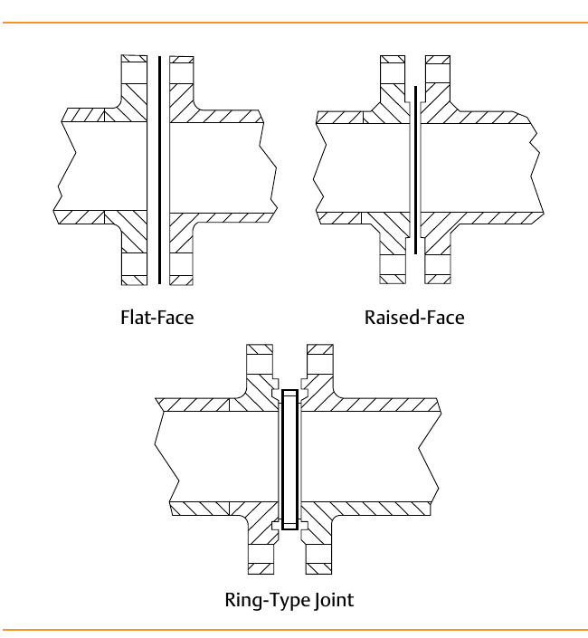
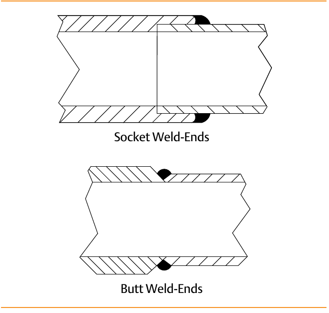

End Connections — Bolted Flange vs. Welded
Bolted flange

Flat-Face, Raised-Face, or Ring-Type Joint — easily removed for maintenance; between the three styles covers the full working range most control valves are built for, to roughly 815°C or 15,000 psig depending on style
Welded

Socket Weld-Ends or Butt Weld-Ends — leak-tight at any pressure/temperature, cheaper in first cost, but removing one means cutting it out of the line, and construction is limited to weldable body materials
After Control Valve Handbook, 6th ed., Figs. 3.17 & 3.18 — used directly. Component Index: cvh-cmp-bolted-flange-end-connections, cvh-cmp-welded-end-connections.